|
|
|
|
|
Ismailia to Turkey
Dear All,
Our last note found us in Ismailia, half way up the Suez Canal, and returning to Hinewai after a very full couple of days in Cairo. We know we should have spent more time there, but we had seen the major sights (albeit briefly) and frankly we now just wanted to get out of Egypt.
Like most yachties, by this time we had had enough of the corruption and baksheesh attitude that permeates every part of life.
But first, we had to get Hinewai ready to go.
More problems in Ismailia
It was getting late when we got back to the boat from Cairo so we turned in quickly. With a good night’s sleep under our belts, it was time to start to get ready to get moving again.
The first job was to advise the Agents that we wanted to move on again – they promised to talk with the Canal Authority and let us know when a pilot might be available – at this stage there were three of us wanting pilots so we hoped it wouldn’t be too long.
The next was fuel – we’d managed to get a fair bit before the Cairo trip, but still needed another 80 odd litres. But this time we’d found an ally.
The day before we left for Cairo, having just got back from one fuel run, Jean got chatting to this very distinguished older man, who turned out to be a senior officer in the Customs (I think). He had confirmed that yachties were allowed 100ltrs and that we should never, never, pay baksheesh.
He’d even pointed out where his office was – and told us that if we had problems, to come and get him. So we were primed – nay, looking forward to it.
Sure enough, we rock up to the gate with our 4 Jerry Cans and flash our passports at the spotty kid with the AK-47. As expected, he calls for his boss – the sleaze with the moustache, who promptly demands 50LE from Peter.
Peter says “No”. As this discussion continued – him demanding money, Peter pointing out that we were entitled by law to get 100lts, him disagreeing, Peter re-iterating the point, Jean slipped away to find our friend.
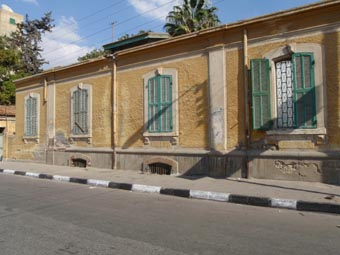 Who came out and ripped a huge strip off the Moustached Sleaze – it was a grand chewing out – a few moments of pure Heaven. We picked up our Jerry Cans and walked round the barrier – wide, happy smiles across our faces.
With full tanks down below and full Jerry Cans tied onto the deck, we turned to food – and started to head up to the local market and supermarket. As we walked out of the Marina, we bumped into the Agent who let us know we’d be leaving the next morning. O, what a frabjous day it was turning into.
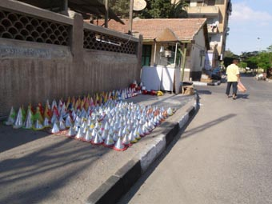 And we even scored a lift back in the Supermarkets van with all our shopping.
Late that afternoon with the boat all ready to go, we took some time out and went for a last walk around Ismailia.
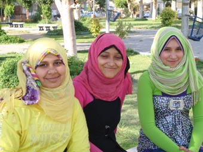 It really is a very pretty town (well, by Egyptian standards) and as we walked around with the cameras, stopping and chatting with some of the locals, it reminded us that as long as you screen out all the baksheesh, how good a time we had had in Egypt and what a special country it could become.
The Second Half of the Suez Canal
As in Port Suez, the Pilots arrived a couple of hours before we expected them, but this time, the three yachts were ready, having been sitting having our cups of tea well early.
Our Pilot climbed aboard and gesticulated we must leave now. Sadly, it soon became clear his English wasn’t a patch on our first Pilot’s, but he seemed pleasant enough.
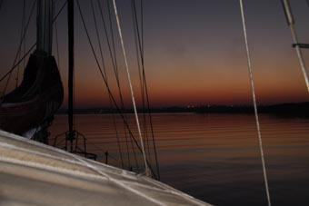 It was still dark as we slipped our lines and headed out – with our Pilot insisting he drove. It’s a difficult situation for Peter – when technically in the Suez Canal, the Pilot is in charge of the yacht, the International Rules of the Sea mean that, as the Captain, he would still be responsible if anything happens. So he stayed close by the Pilot, ready to move if needed.
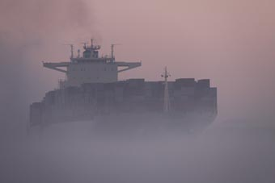 At first, the air was crystal clear, and we could see the flashing navigation marks heading off into the distance, but then as dawn started to break, a low mist started to form on the surface of the Canal.
It wasn’t too bad at first and you could still see the ships of the Southbound Convoy, but as it got lighter the mist got thicker – in fact, it was becoming a goodly fog – albeit maybe just 15-20 feet high.
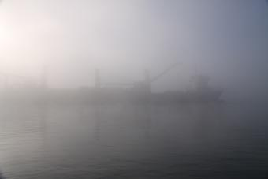 This doesn’t worry the big ships too much – their bridges are so high they can see over the fog, but we were soon able to see very little from our lowly position. It was odd – when Peter climbed up on the Pilot House, his eyes were high enough to see over the fog, but it was not a comfortable position to be in.
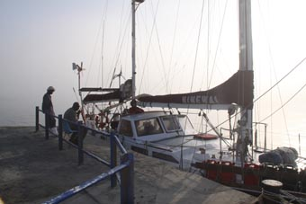 We had suggested to the Pilot a while early that maybe we should stop, but he insisted we kept going. So we were delighted as we passed a small wharf, he suddenly pointed and went “There! Stop!”
This was a bit of a bummer since we had just passed it so we quickly checked the radar to check the two yachts following us were not too close behind, did a very quick and tight 180 and slotted ourselves alongside – albeit still with our hearts in our mouths. A couple of chaps fishing off the wharf were a tad surprised as we appeared out of the fog, but having grabbed their rods out of harms way, took the lines we threw them and tied us up.
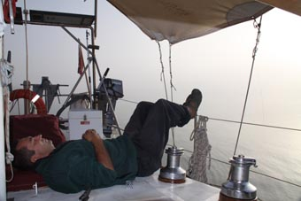 Peter leapt ashore to thank them with a couple of packs of smokes (and check the lines) and realised that within 5 feet of the Canal, there was no fog – a beautiful sunny day. Turning around, he could just make out the superstructure of a big ship slipping south through the fog with the masts of the two other yachts heading north appearing very very close.
We spent an hour or so tied up there and Peter took the chance to catch up on some sleep – which he wouldn’t have done had he’d known what was happening on one of the other yachts.
Jean shook Peter awake after an hour or so to say the pilot wanted to head on. We quickly slipped the lines, spun the boat through another 180 and headed on.
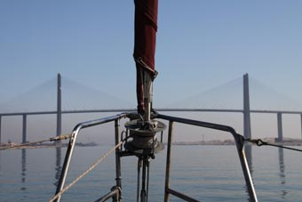 The rest of the trip was fairly uneventful (Thank Heavens!) – or so we thought. The Pilot was a dour man who steering most of the way, only relinquishing control when he needed the loo (Jean steering, Peter keeping an eye on him to ensure nothing fell into his pockets).
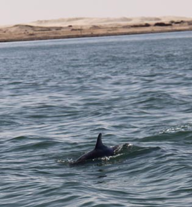 The Southbound Convoy was still coming down when we started, but thankfully had stopped as we came up the only permanent bridge that crosses the canal - the pilot insisted we passed right under the middle of it - I mean, how tall did he think our masts are.
And then soon after the bridge, we even saw a few dolphins, swimming a good 20 miles from the sea. We were somewhat surprised to see them.
The pilot's English suddenly started to improve and we guessed we were getting close to Port Siad when he started to ask about his “presents”. Oh, what a difference he was to the first Pilot who was a gentleman – this guy went on and on and on.
Finally, Port Siad came into view and we asked him where to drop him off – we had been warned to try and go alongside to drop the Pilot off, not let a Pilot Boat alongside. All of a sudden, his English became slim again – and he started to jabber away on our hand-held VHF.
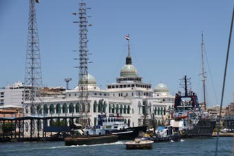 We were well into Port Siad harbour when we gave him his bag of goodies, which he went through and asked for more – we declined. We were still trying to find out where to drop him off, with big ships, ferries and all manner of smaller craft zooming around when he suddenly urgently says “Stop now! STOP!”. Peter, having got the wheel back about 5 minutes earlier, slams us into astern and stops Hinewai thinking there was some danger ahead.
No, the danger came from the side. The Pilot clambers out of the cockpit and stands amidships as a small Pilot Boat appears and rams us – leaving its engine running hard to hold its bow against our side to allow the Pilot to climb off. With a couple of vague gestures towards our stern, they powered away without another word.
We looked over the stern and discovered we
were towing some fishing floats and a long length of rope –
the bloody Pilot must have driven us across some poor
buggers fishing nets – which we’d been towing under water
for … who knows how long. 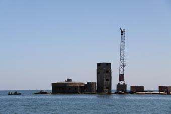
Since it was obviously not fouled on our prop, and stopping to try and clear it in the middle of the harbour would be akin to changing a flat tyre in the middle of the Marble Arch Roundabout/Sydney Harbour Bridge/South Eastern Freeway/Graham Farmer Freeway in the middle of rush hour, we decided to power up and get out of Egypt.
Even so, it took a while – Port Siad has a long long breakwater to the west of the channel – the last mile being underwater – along with heaps of semi derelict defences. It seemed to take an age to get past all this, but at last we popped clear and moved out of the channel to clear this line.
It took a while – firstly trying to hook the line with the boat hook and then trying to pull it free. It turned out that as we ran over it, it had caught on the two big zinc blocks (they are sacrificial, being attacked first by any electrolysis and protecting the steel hull) on either side of the bow. The width of the boat under water had then streamed this line away from the propeller.
Once we had then cut the line free and got the bits on board to throw away when we got to land, then – and only then – did we finally feel we were at last out of Egypt! And it was such a wonderful feeling – yachties who’ve followed this route call it the “Med Euphoria”.
We set sail for Turkey.
(The more legal minded among you may notice we didn’t stop and formally complete all the paperwork to sign out of the Canal and Egypt with their authorities – well, screw the authorities! We’d had enough!)
A Warning to All Yachts in the Suez Canal
We didn’t hear until we got to Turkey what had been going on with one of the other yachts that came up the Suez Canal from Ismailia with us.
Everything seemed to be going smoothly, the Pilot seemed OK and,with the Skipper being very tired and planning to sail straight across to Turkey, the Skipper’s wife suggested he grab a few Zzz.
After he dozed off, the Pilot SEXUALLY ASSAULTED the wife. She managed to fight him off, albeit with a few BITES and scratches, and managed to wake hubby.
She chose not to say anything then and there, telling him after they had left Egypt – Jean and Peter think that was a hard, but right call - while it would have been great justice to beat 7-shades out of the Pilot, that might have ended up involving the authorities. And that would have been Hell.
BUT, as our first wonderful Suez Pilot said, there are some bad, some very bad apples among the Pilots – never ever drop your guard.
We set sail for Turkey
When Bob and Leonie of Island Fling had headed this way a week or two before, they had had perfect 15-20 knot westerlies the whole way. The forecast we’d checking in Cairo had showed westerlies for a day or so, then nothing.
We’d downloaded the latest weather that last night in Ismailia and it showed the winds quickly dropping out. As it turned out, we had about four hours of sailing after leaving Port Said – and then say nary more than a light breeze for the next 72 hours.
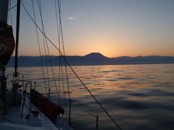 It was so so frustrating – we ended up motor sailing most of the way – it was one of the most boring trips we’ve had so far – no dolphins, nothing – just glassy flat seas - and ended up arriving off Alanya around 03.00. We stoped the engine and just flopped around until it got light.
It was about 08.00 that Alanya Marina finally answered our calls on VHF16 – and we go the OK to come in. As you approach, you have the high rocky promontory with its Castle protecting old Alanya town and harbour to your right – the new marina is to the west.
We negotiated our way around the breakwaters and were met by the work boat who directed us around to our mooring. At that time, the marina is so new, there were no mooring lines so we had to drop our anchor and reverse into our slot. With the anchor down and our stern lines set, we faced a small problem – we couldn’t get ashore – we couldn't get our stern close enough to jump ashore or we'd risk trashing our Aires wind steering that hangs off the stern.
No problem, Mersud, the driver of the work boat (and who over the next few weeks proved to be a true gem) asked us to wait a couple of minutes, disappeared, then came back with a few bits of wood, hammer and nails which he proceeded to turn into a gangplank (or passerelle as they are called over here) for us. With it safely tied off on one our stern cleats, we climbed ashore.
We were standing on Turkey!
I think this will do for now – the next email will cover our time in Alanya, the haul out and repairing some of the damage from the Red Sea.
All the best
Peter & Jean
|
|
|
|
|
|
|
|
The Crew The Route The Yacht The Log Guestbook Links Contact Us |
|
|
|
|
|
Home |
|
|
All Original Content of this Web Site Copyright © 2000, 2001, 2002, 2003, 2004, 2005, 2006, 2007, 2008, 2009 Ocean Odyssey Pty Ltd |